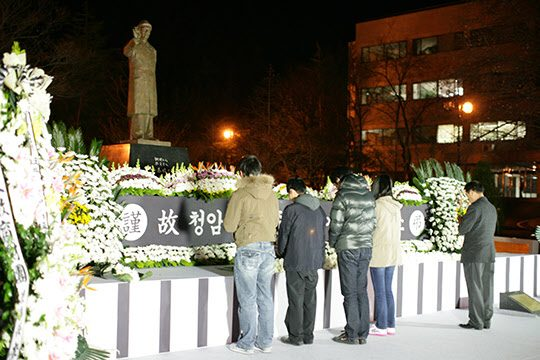
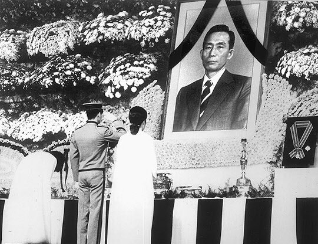
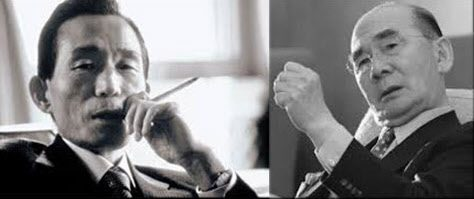
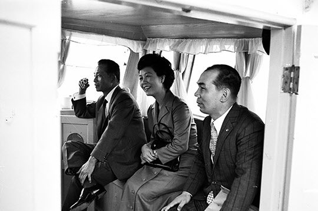

보도일 2015-07-09출처 조선일보 프리미엄조선 연재
대한민국의 큰 일꾼 박태준, 그가 사양한다 할지라도 그에게 포스코 공로주를 단 한 주도 권유하거나 선사(膳賜)할 줄 몰랐던 대한민국 정부가 그의 죽음을 위하여 ‘마지막 예의’를 차렸으니, 그것은 서울 동작동 국립 현충원에 두세 평짜리 유택을 마련해준 것이었다. 국가유공자 묘역의 한 귀퉁이, 거기는 박정희의 유택과 이웃이다. 박정희를 그리워한 박태준. 저승의 박정희와 박태준을 이웃으로 맺어주는 과정에는 박정희의 외아들 박지만의 활약이 두드러졌다. 박태준의 유택을 마련하는 일에 박지만은 아버지의 유택을 찾듯이 성심껏 뛰어다녔다.
2011년 12월 17일, 영하 10도의 차디찬 동토 속으로 들어가는 박태준을 지켜보며 한용운의 시 「님의 침묵」 마지막 연을 떠올리는 이들도 있었다.
우리는 만날 때에 떠날 것을 염려하는 것과 같이
떠날 때에 다시 만날 것을 믿습니다.
아아 님은 갔지만
나는 님을 보내지 아니하였습니다.

박태준의 ‘님’은 조국이었다. 그것도 일류국가인 조국이었다. 그 ‘님’을 만나려고 애를 태우는 그의 신념과 열정과 소원을 가장 북돋은 이가 박정희였다. 박태준이 이 세상에 살아가는 동안에 인연을 맺었던 숱한 사내들 가운데 박정희는 그가 임종을 다투는 시각에도 그리운 사람으로 그의 영혼 속에 살고 있었다.
10시간에 가까운 대수술의 마취에서 깨어난 박태준이 구미에서 열리는 ‘박정희 동상 제막식’에 참석하지 못하는 미안하고 안타까운 마음을 비서에게 감추지 못했을 때, 늙은 환자의 가슴에는 그리움이 고여 있었다. 오죽했으면 비서가 미리 준비해둔 원고를 꺼내 읽어드리고 싶었으랴.
박태준이 박정희 동상 앞에 바치려 했던, 이제는 그의 유언처럼 남은, 세상에 알려지지 않은 그 유고(遺稿)의 전문은 다음과 같다.
이 뜻 깊은 자리를 빛내주시는 시민 여러분, 그리고 내빈 여러분.
어느덧 저의 인생은 황혼에 와 있습니다. 그러나 아직도 사무치게 그리운 얼굴을 간직하고 있습니다. 고(故) 박정희 대통령입니다. 그리운 각하. 고향 사람들과 시민들이 성의를 모아 동상을 세우고 제막하는 오늘, 불초 박태준이 가슴 속에 쌓인 회한을 불러내듯이 ‘박정희’라는 존함을 불러보고, 거듭 명복을 빕니다.

돌이켜보면, 63년 전 저 태릉 골짜기의 초라한 육사 강의실에서 저는 처음으로 박정희라는 특출한 분의 눈에 띄었고, 결국 그것은 저의 운명이 되었습니다. “나는 임자를 알아. 아무 소리 말고 맡아!” 이 한마디 말씀에 따라 저는 제철에 목숨을 걸고 삶을 바쳐야 했습니다. 지난 1992년 10월 3일, 4반세기 대역사 끝에 포항제철소와 광양제철소를 완공하고 동작동 국립묘지의 영전 앞에서 임무완수 보고를 올렸습니다.
그때, “각하께서 저를 조국 근대화의 제단으로 불러주셨다”고 토로했습니다만, 박정희라는 한 사람을 조국 근대화의 제단으로 불러낸 것은 우리의 시대였고 대한민국의 역사였습니다. 또한 그것은 각하의 피할 수 없는 운명이었습니다.
그리운 각하.
드디어 대한민국은 세계 10위권 경제강국으로 일어섰습니다. ‘오천년 빈곤의 대물림’을 확실하게 끝장냈습니다. 그 물적 토대 위에서 민주주의를 성장시키고, 문화를 꽃피우고, 평화통일을 추구하고, 복지사회를 다시 설계하고 있습니다. 정치 후진성, 청년실업, 남북관계 등 거대 과제들을 안고 있지만, 우리의 역량과 자신감은 얼마든지 해법을 구할 것입니다.

문제는 지도력의 위기입니다. 무에서 유를 창조하는 것과 다름없었던 조국 근대화의 성공 비결은, 현명하고 근면한 국민과 사심 없고 탁월한 지도력이 좋은 짝을 이루었다는 것입니다. 21세기 대한민국은 국민의 역동성과 다양성을 ‘성숙한 사회’로 나아가는 힘으로 승화시킬 지도력을 부르고 있습니다. 시민의 이름으로 세운 이 동상은 하나의 기념물이 아닙니다.
한국사회에는 여전히 ‘박정희 대통령’의 공과(功過)를 따지는 시비가 있지만, 무엇보다 지도력에 대하여 진실로 고뇌하는 사람은 여기에 와서 사색해야 합니다. 박정희 대통령은 이제 조국 번영, 민족 중흥, 민안(民安) 복지의 영원한 길잡이로서 여기 생가 곁에 서 계시는 것입니다.
각하께서 가족과 함께 포항제철을 방문하신 시절에는 아리따운 아기씨였던 맏따님이 어느덧 이 나라의 가장 영향력 있는 정치지도자로 성장해 있습니다. 참으로 장하고 자랑스러운 그 모습을 통해 한편으로는 세월이 참 빠르다는 사실도 깨닫게 됩니다. 각하, 이제는 저의 인생도 얼마 남지 않았습니다. 우리가 재회하여 막걸리를 나누게 되는 그날, 밀리고 밀린 이야기의 보따리를 풀어놓겠습니다. 며칠은 마셔야 저의 이야기를 어느 정도는 마칠 것 같습니다. 부디 평안히 기다려 주십시오.
아마도 박정희의 혼령과 박태준의 혼령은 밤에 짝을 지어 마실 나가듯이 가끔씩 동작동 현충원을 빠져 나와서 ‘한강의 기적’의 추억을 더듬어볼 수 있는 어느 호젓한 자리에 앉아 막걸리 잔을 기울이곤 할 것이다. 한 번쯤은 국가도 민족도 다 덮어두고 이런 소박한 대화를 나누기도 했을 것이다.
“아무래도 요새 막걸리는 우리 때하고는 맛이 많이 다른 거 같은데.”
“그럴 수밖에 없습니다. 그때는 막걸리도 아껴야 했으니 물을 엄청 타지 않았습니까? 요새는 물도 안 타는 데다 각하가 그렇게 금했던 쌀로 막걸리를 만든다는 걸 아셔야 합니다.”
“아, 맞아. 그렇군, 그래.”
이러고는 둘이서 누구의 귀에도 들리지 않은, 그러나 밤하늘에 너울 같은 파문을 일으킬 만하게 한바탕 호방한 웃음을 날렸을 것이다. <完>
